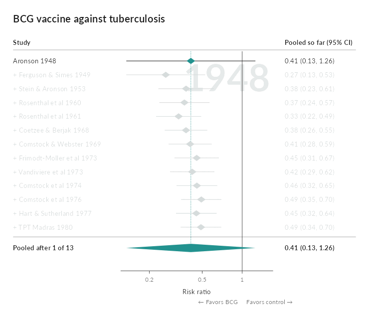
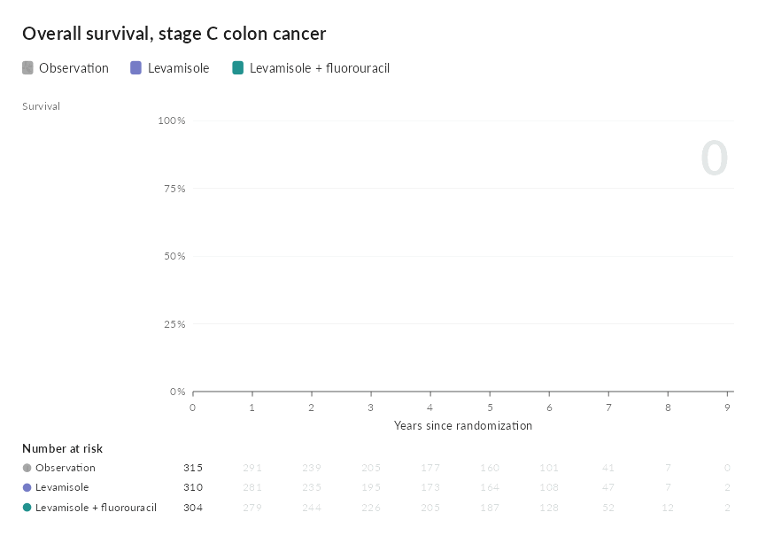

Presentation quality charts built on ggplot2 that the package itself does not provide. There are six so far:
- Bar chart races: an animation of a ranking that changes over time, of the kind used to summarize long panels in talks, teaching material and journal supplements.
- Interactive causal diagrams: a directed acyclic graph in which every node and arrow carries its rationale and references, shown on hover and opened in full on click.
- Interactive network plots: the network of a network meta-analysis, with the baseline characteristics and outcomes of every arm behind each treatment and comparison.
- Interactive forest plots: a meta-analysis with each study’s record and risk of bias traffic lights, and a cumulative replay as an animation.
- League tables: every estimate of a network meta-analysis, with its direct and indirect evidence and a ranking of the treatments.
- Kaplan-Meier plots: survival curves that read every group, and the hazard ratio, at any time under the pointer, with a linked risk table and proportional hazards tests.
All six are drawn as ordinary ggplot objects. Nothing is hidden behind a separate rendering engine, so a frame or a diagram can be inspected, modified or saved on its own.

Installation
# install.packages("remotes")
remotes::install_github("choxos/ggextreme")Writing output requires an encoder: gifski or magick for GIF, av or an ffmpeg binary for MP4. Images on the bars require magick.
Bar chart races
ggrace() takes long data with one row per entity per time point, and three bare column names for the value, the label and the time.
library(ggextreme)
race <- ggrace(
clefts_qci,
value = qci,
name = country,
time = year,
top_n = 15,
duration = 15,
title = "Quality of care for orofacial clefts",
caption = "Source: Sofi-Mahmudi et al. 2025, PLOS ONE 20(1): e0317267"
)
race_frame(race, 200) # one frame, as a ggplot
animate_race(race, "race.mp4") # draw every frame and encodetime may be numeric or a Date. Each entity and time pair must appear once; a repeat is an error rather than a silent average. The encoder is chosen from the file extension, and frames are drawn across cores by default.
Selected arguments:
| argument | effect |
|---|---|
top_n |
number of bars visible at once |
duration, fps, end_pause
|
length in seconds, frame rate, hold on the final frame |
swap |
seconds a bar takes to move into a new rank |
group |
color bars by category and draw a legend |
palette, breaks
|
bar colors; gridline positions |
label_value, label_time
|
formatters for the bar numbers and the time label |
images |
pictures placed at the end of the bars |
timeline, play_button, card
|
optional chrome around the plot |
width, res
|
output size; the layout scales with width
|
Coloring by group
Passing a group column colors the bars by category rather than individually and draws a legend above the axis. Each entity must belong to exactly one category; a factor keeps the legend in the order of its levels.
ggrace(
clefts_qci, qci, country, year,
group = region,
legend_title = "Region",
top_n = 15
)The card grows to make room for the legend, wrapping onto more rows when the categories do not fit across it. legend = FALSE keeps the coloring and drops the legend.
Images on the bars
images takes image file paths named by entity. Pictures are cropped to a circle and right aligned just inside the end of each bar; entities without an image simply get none. A circular flag for every ISO 3166-1 country, plus Kurdistan, is bundled, so country races need no extra files.
key <- unique(clefts_qci[c("country", "iso")])
flags <- setNames(race_flags(key$iso), key$country)
ggrace(clefts_qci, qci, country, year, top_n = 15, images = flags)Any image works, not only flags. Pass paths to logos, portraits or crests in the same way.
Design notes
Three choices govern how the animation reads. They are set out in full in vignette("how-the-animation-works").
- Values are interpolated on a uniform time grid. Bars grow at a steady rate, and unevenly spaced observations play at their true relative speed.
-
Rank is not interpolated. Every frame is ranked on its own values, and a bar that changes rank eases into the new position over
swapseconds. Bars therefore rest in place and trade positions in one short move rather than drifting for a whole time step. - The geometry is fixed. The label column has a constant width and the panel edges are constants, so the chart does not shift sideways when the longest name enters or leaves the visible window. Colors are assigned once across the whole field, so an entity keeps its color when it drops out and returns.
Interactive causal diagrams
ggcausal() draws a DAG from two data frames: edges, with one row per arrow, and nodes, with one row per variable. A rationale and references column on either one explains why that node or arrow is in the diagram. Hovering shows the rationale; clicking opens a panel with the full text and clickable references, which also works on touch screens.
dag <- ggcausal(cleft_dag$edges, cleft_dag$nodes, legend_title = "Role")
dag # interactive widget
graph_save(dag, "dag.html") # a single file for a supplement
graph_save(dag, "dag.png") # a static figureGitHub cannot run the widget, so the image above is static. The interactive version is on the package website.
Nodes are colored by role, with fixed colors for exposures, outcomes, confounders, mediators, colliders, instruments and unobserved variables. The layout is layered so that every arrow points the same way, and an arrow that skips a layer bends around the boxes in between; x and y columns place the boxes by hand instead. Any other column in either data frame appears as a labeled field. The widget embeds a web copy of Lato and works in R Markdown, Quarto, ‘pkgdown’ and ‘shiny’.
Interactive network plots
ggnma() draws the network of a network meta-analysis from arm level data, one row per study arm. Nodes are treatments and lines join treatments compared directly in at least one study; node area follows the number of participants, line width the number of studies, and a shaded polygon joins the treatments of each multi-arm study. Hovering over a node, line or polygon shows its arms side by side, in the manner of a trial’s baseline table, with the columns chosen in hover; clicking opens the full table with every other column of the data as a row.
net <- ggnma(psoriasis_nma, study, treatment, n = n, group = class,
legend_title = "Class")
net # interactive widget
graph_save(net, "network.html") # a single file for a supplementThe interactive version is on the package website. Nodes sit on a circle or wherever positions places them. Rows of the arm tables are named from each column’s label attribute, text that is the same across a study, such as a reference, is listed once per study, and DOIs and URLs are linked.
Interactive forest plots
ggmeta() draws the forest plot of a fitted meta-analysis, a metafor rma() fit or a meta object. Hovering over a study shows its effect, weight and chosen columns, and clicking it opens every column of its record. Risk of bias judgements, from RoB 2, RoB 1 or ROBINS-I, are drawn as traffic lights beside each study.
ggmeta(fit,
columns = c("P2Y12 inhibitor" = "p2y12", Aspirin = "aspirin"),
rob = c(R = "rob.R", D = "rob.D", Mi = "rob.Mi", Me = "rob.Me",
S = "rob.S", Overall = "rob.overall"),
favors = c("Favors P2Y12 inhibitor", "Favors aspirin"))cumulative = TRUE shows the pooled estimate after each study, and animate_meta() replays it as a GIF or MP4, each trial fading in as the pooled diamond eases to its new value:

League tables
ggleague() draws every estimate of a netmeta fit as a grid, network estimates below the diagonal and direct estimates above it, following netmeta::netleague(), with a P-score ranking beside it. Hovering over a cell shows the network, direct and indirect estimates and the share that comes from direct trials; clicking it opens the direct trials arm by arm.
ggleague(nma, psoriasis_nma, study, treatment, small_values = "undesirable")Kaplan-Meier plots
ggkm() draws Kaplan-Meier curves by group from a Surv(time, status) ~ group formula. Hovering anywhere along the time axis shows each group’s survival with its confidence interval, the number at risk and the events so far, and the hazard ratio against the reference group at that time, from the smoothed Schoenfeld residuals or a time interaction model, while the matching column of the risk table lights up. Below the plot, a table gives the Cox hazard ratios, the log-rank test, the Grambsch and Therneau test and the group by time and group by log time interactions.
ggkm(Surv(years, status) ~ arm, data = colon,
xlab = "Years since randomization")animate_km() draws the curves over follow-up as a GIF or MP4:

Bundled data
clefts_qci gives the Quality of Care Index for orofacial clefts in fifteen countries from 1990 to 2019. The index is a composite of four secondary indices derived from Global Burden of Disease estimates, summarized by principal component analysis and rescaled from 0 to 100.
Sofi-Mahmudi A, Shamsoddin E, Khademioore S, Khazaei Y, Vahdati A, Tovani-Palone MR (2025). Global, regional, and national survey on burden and Quality of Care Index (QCI) of orofacial clefts: Global burden of disease systematic analysis 1990-2019. PLOS ONE 20(1): e0317267. https://doi.org/10.1371/journal.pone.0317267
psoriasis_nma gives arm level baseline characteristics and PASI 75 response for five randomized trials in plaque psoriasis (CLEAR, ERASURE, FEATURE, FIXTURE and JUNCTURE), as compiled by Phillippo (2019) and distributed with the ‘multinma’ package. They were analyzed in Phillippo et al. (2020), Journal of the Royal Statistical Society Series A 183(3): 1189-1210, https://doi.org/10.1111/rssa.12579.
cleft_dag is a small illustrative causal diagram for maternal smoking and orofacial clefts. Its rationales were written for the package as a teaching example, and every reference it cites was checked against PubMed.